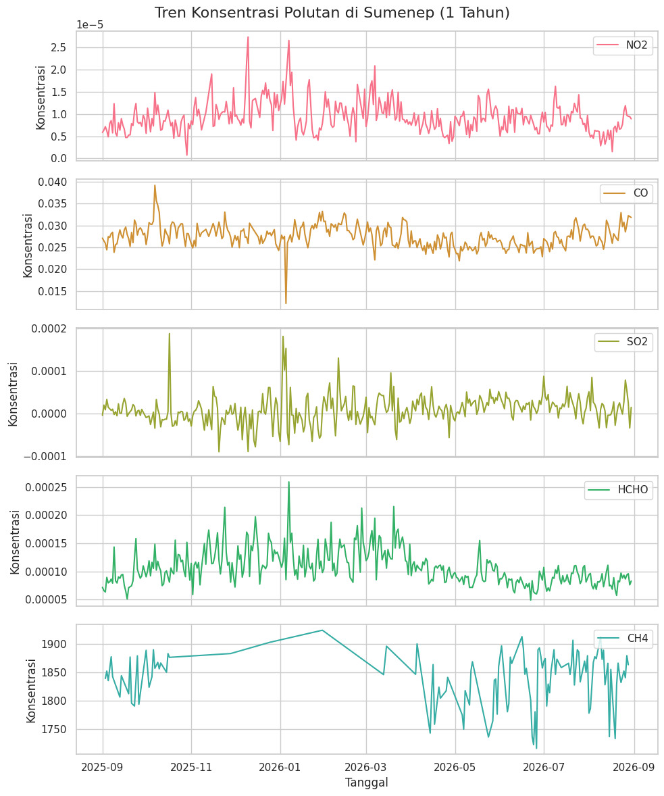
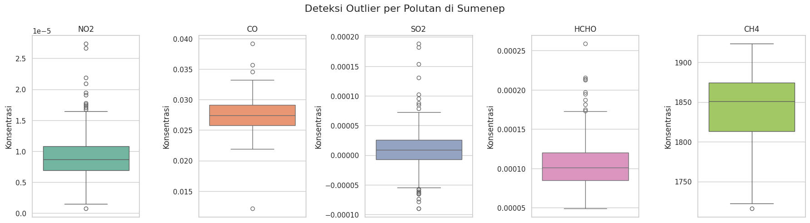

Analisis Kualitas Udara Kabupaten Sumenep Berdasarkan Data Polutan Tahun 2025–2026#
1. Business Understanding#
1.1 Latar Belakang#
Kualitas udara merupakan salah satu bagian penting dari kondisi lingkungan yang perlu diperhatikan. Udara dapat mengandung berbagai polutan yang berasal dari aktivitas manusia maupun proses alami. Keberadaan polutan dalam jumlah tertentu dapat memengaruhi kondisi lingkungan dan kesehatan manusia.
Kabupaten Sumenep merupakan salah satu wilayah di Jawa Timur yang memiliki berbagai aktivitas masyarakat, seperti transportasi, pertanian, peternakan, pembakaran, dan aktivitas lainnya yang berpotensi menghasilkan emisi ke atmosfer. Oleh karena itu, diperlukan informasi mengenai kondisi dan perubahan polutan udara di wilayah tersebut.
Untuk mengetahui kondisi polutan udara di Kabupaten Sumenep, proyek ini menggunakan data penginderaan jauh dari Sentinel-5P yang diperoleh melalui platform openEO. Data yang digunakan meliputi lima parameter polutan atmosfer, yaitu Nitrogen Dioxide (NO₂), Carbon Monoxide (CO), Sulfur Dioxide (SO₂), Formaldehyde (HCHO), dan Methane (CH₄).
Data diambil pada wilayah Kabupaten Sumenep dengan menggunakan batas wilayah berupa Area of Interest (AOI). Periode data yang digunakan adalah 1 September 2025 sampai 31 Agustus 2026. Data tersebut kemudian diolah dan dianalisis untuk melihat perubahan polutan dari waktu ke waktu.
Hasil analisis akan disajikan dalam bentuk grafik time series, sehingga perubahan nilai masing-masing polutan selama periode pengamatan dapat dilihat dengan lebih mudah.
1.2 Tujuan#
Tujuan dari proyek ini adalah untuk mengetahui kondisi kualitas udara di Kabupaten Sumenep berdasarkan data polutan atmosfer selama periode September 2025 sampai Agustus 2026.
Analisis dilakukan dengan mengamati perubahan beberapa polutan, yaitu NO₂, CO, SO₂, HCHO, dan CH₄ dari waktu ke waktu menggunakan data time series.
1.3 Manfaat#
Manfaat dari proyek ini adalah:
Mengetahui kondisi kualitas udara di Kabupaten Sumenep berdasarkan data beberapa polutan atmosfer.
Mengetahui perubahan polutan dari waktu ke waktu, sehingga dapat diketahui pola kenaikan dan penurunan nilai masing-masing polutan.
Memberikan informasi mengenai kondisi lingkungan, khususnya terkait perubahan beberapa polutan atmosfer di Kabupaten Sumenep.
Mempermudah pemantauan perubahan polutan, karena data disajikan dalam bentuk grafik time series yang lebih mudah dipahami.
Menjadi informasi awal untuk analisis kualitas udara, yang dapat digunakan untuk pengamatan dan analisis lingkungan lebih lanjut.
2. Data Understanding#
2.1 Sumber Data#
Data yang digunakan dalam proyek ini berasal dari Sentinel-5P dengan instrumen TROPOMI (Tropospheric Monitoring Instrument). Sentinel-5P merupakan satelit pengamatan atmosfer yang menyediakan data berbagai komponen atmosfer dan polutan.
Data Sentinel-5P Level-2 menyediakan beberapa produk atmosfer, termasuk NO₂, CO, SO₂, HCHO, dan CH₄. Data tersebut digunakan untuk mengamati kondisi atmosfer dan perubahan polutan dari waktu ke waktu.
Pada proyek ini, data diperoleh melalui platform openEO menggunakan koleksi:
SENTINEL_5P_L2
Data kemudian dibatasi pada wilayah Kabupaten Sumenep, Jawa Timur menggunakan Area of Interest (AOI).
Sumber resmi Sentinel mencantumkan NO₂, SO₂, HCHO, CH₄, dan CO sebagai produk pengamatan atmosfer Level-2 Sentinel-5.
:contentReference[oaicite:0]{index=0}
2.2 Wilayah dan Periode Data#
Wilayah yang dianalisis adalah:
Kabupaten Sumenep, Jawa Timur
Pengambilan data dibatasi menggunakan koordinat wilayah sebagai spatial extent dan AOI.
Koordinat yang digunakan:
West: 113.53
East: 116.30
South: -7.30
North: -4.92
Periode data yang digunakan adalah:
1 September 2025 – 31 Agustus 2026
Dengan periode tersebut, data yang dianalisis mencakup pengamatan selama satu tahun.
2.3 Fitur Data#
Data memiliki lima fitur utama yang digunakan sebagai parameter pengamatan kualitas udara dan kondisi atmosfer.
Fitur |
Nama |
Deskripsi Singkat |
|---|---|---|
NO₂ |
Nitrogen Dioxide |
Gas nitrogen oksida yang berkaitan dengan proses pembakaran dan aktivitas manusia. |
CO |
Carbon Monoxide |
Gas yang banyak dihasilkan dari pembakaran tidak sempurna. |
SO₂ |
Sulfur Dioxide |
Gas yang dapat dihasilkan dari pembakaran bahan bakar yang mengandung sulfur dan aktivitas industri. |
HCHO |
Formaldehyde |
Senyawa organik yang berkaitan dengan proses oksidasi senyawa organik dan berbagai sumber emisi. |
CH₄ |
Methane |
Gas rumah kaca yang berasal dari berbagai sumber alami dan aktivitas manusia. |
Kelima fitur tersebut digunakan untuk melihat perubahan kondisi atmosfer di Kabupaten Sumenep.
2.4 Apa Itu NO₂?#
NO₂ (Nitrogen Dioxide) atau nitrogen dioksida merupakan salah satu gas pencemar atmosfer. NO₂ merupakan gas yang reaktif dan dapat terbentuk terutama dari proses pembakaran.
2.5 Pengambilan dan Visualisasi Data Polutan#
Sebelum masuk ke langkah pertama, kita harus install dulu pustaka openeo biar Python kita bisa terhubung ke server satelit.
pip install openeo
Requirement already satisfied: openeo in /usr/local/python/3.12.1/lib/python3.12/site-packages (0.51.0)
Requirement already satisfied: requests>=2.26.0 in /home/codespace/.local/lib/python3.12/site-packages (from openeo) (2.32.5)
Requirement already satisfied: urllib3>=1.9.0 in /home/codespace/.local/lib/python3.12/site-packages (from openeo) (2.6.3)
Requirement already satisfied: shapely>=1.6.4 in /usr/local/python/3.12.1/lib/python3.12/site-packages (from openeo) (2.1.2)
Requirement already satisfied: numpy>=1.17.0 in /usr/local/python/3.12.1/lib/python3.12/site-packages (from openeo) (2.5.2)
Requirement already satisfied: xarray<2025.01.2,>=0.12.3 in /usr/local/python/3.12.1/lib/python3.12/site-packages (from openeo) (2025.1.1)
Requirement already satisfied: pandas<3.0.0,>0.20.0 in /usr/local/python/3.12.1/lib/python3.12/site-packages (from openeo) (2.3.3)
Requirement already satisfied: pystac>=1.5.0 in /usr/local/python/3.12.1/lib/python3.12/site-packages (from openeo) (1.15.2)
Requirement already satisfied: deprecated>=1.2.12 in /usr/local/python/3.12.1/lib/python3.12/site-packages (from openeo) (1.3.1)
Requirement already satisfied: geopandas>=0.14 in /usr/local/python/3.12.1/lib/python3.12/site-packages (from openeo) (1.1.4)
Requirement already satisfied: python-dateutil>=2.8.2 in /home/codespace/.local/lib/python3.12/site-packages (from pandas<3.0.0,>0.20.0->openeo) (2.9.0.post0)
Requirement already satisfied: pytz>=2020.1 in /usr/local/python/3.12.1/lib/python3.12/site-packages (from pandas<3.0.0,>0.20.0->openeo) (2026.3.post1)
Requirement already satisfied: tzdata>=2022.7 in /home/codespace/.local/lib/python3.12/site-packages (from pandas<3.0.0,>0.20.0->openeo) (2025.3)
Requirement already satisfied: packaging>=23.2 in /home/codespace/.local/lib/python3.12/site-packages (from xarray<2025.01.2,>=0.12.3->openeo) (26.0)
Requirement already satisfied: wrapt<3,>=1.10 in /usr/local/python/3.12.1/lib/python3.12/site-packages (from deprecated>=1.2.12->openeo) (2.4.0)
Requirement already satisfied: pyogrio>=0.7.2 in /usr/local/python/3.12.1/lib/python3.12/site-packages (from geopandas>=0.14->openeo) (0.13.0)
Requirement already satisfied: pyproj>=3.5.0 in /usr/local/python/3.12.1/lib/python3.12/site-packages (from geopandas>=0.14->openeo) (3.7.2)
Requirement already satisfied: certifi in /home/codespace/.local/lib/python3.12/site-packages (from pyogrio>=0.7.2->geopandas>=0.14->openeo) (2026.2.25)
Requirement already satisfied: pystac-core<2,>=1.15.0 in /usr/local/python/3.12.1/lib/python3.12/site-packages (from pystac>=1.5.0->openeo) (1.15.2)
Requirement already satisfied: pystac-ext-classification in /usr/local/python/3.12.1/lib/python3.12/site-packages (from pystac>=1.5.0->openeo) (2.0.1)
Requirement already satisfied: pystac-ext-datacube in /usr/local/python/3.12.1/lib/python3.12/site-packages (from pystac>=1.5.0->openeo) (2.2.1)
Requirement already satisfied: pystac-ext-eo in /usr/local/python/3.12.1/lib/python3.12/site-packages (from pystac>=1.5.0->openeo) (1.1.1)
Requirement already satisfied: pystac-ext-file in /usr/local/python/3.12.1/lib/python3.12/site-packages (from pystac>=1.5.0->openeo) (2.1.1)
Requirement already satisfied: pystac-ext-grid in /usr/local/python/3.12.1/lib/python3.12/site-packages (from pystac>=1.5.0->openeo) (1.1.1)
Requirement already satisfied: pystac-ext-item-assets in /usr/local/python/3.12.1/lib/python3.12/site-packages (from pystac>=1.5.0->openeo) (1.0.1)
Requirement already satisfied: pystac-ext-label in /usr/local/python/3.12.1/lib/python3.12/site-packages (from pystac>=1.5.0->openeo) (1.0.2)
Requirement already satisfied: pystac-ext-mgrs in /usr/local/python/3.12.1/lib/python3.12/site-packages (from pystac>=1.5.0->openeo) (1.0.1)
Requirement already satisfied: pystac-ext-mlm in /usr/local/python/3.12.1/lib/python3.12/site-packages (from pystac>=1.5.0->openeo) (1.4.1)
Requirement already satisfied: pystac-ext-pointcloud in /usr/local/python/3.12.1/lib/python3.12/site-packages (from pystac>=1.5.0->openeo) (1.0.1)
Requirement already satisfied: pystac-ext-projection in /usr/local/python/3.12.1/lib/python3.12/site-packages (from pystac>=1.5.0->openeo) (2.0.1)
Requirement already satisfied: pystac-ext-raster in /usr/local/python/3.12.1/lib/python3.12/site-packages (from pystac>=1.5.0->openeo) (1.1.1)
Requirement already satisfied: pystac-ext-render in /usr/local/python/3.12.1/lib/python3.12/site-packages (from pystac>=1.5.0->openeo) (2.0.0)
Requirement already satisfied: pystac-ext-sar in /usr/local/python/3.12.1/lib/python3.12/site-packages (from pystac>=1.5.0->openeo) (1.0.1)
Requirement already satisfied: pystac-ext-sat in /usr/local/python/3.12.1/lib/python3.12/site-packages (from pystac>=1.5.0->openeo) (1.0.1)
Requirement already satisfied: pystac-ext-scientific in /usr/local/python/3.12.1/lib/python3.12/site-packages (from pystac>=1.5.0->openeo) (1.0.1)
Requirement already satisfied: pystac-ext-storage in /usr/local/python/3.12.1/lib/python3.12/site-packages (from pystac>=1.5.0->openeo) (2.0.1)
Requirement already satisfied: pystac-ext-table in /usr/local/python/3.12.1/lib/python3.12/site-packages (from pystac>=1.5.0->openeo) (1.2.1)
Requirement already satisfied: pystac-ext-timestamps in /usr/local/python/3.12.1/lib/python3.12/site-packages (from pystac>=1.5.0->openeo) (1.1.1)
Requirement already satisfied: pystac-ext-version in /usr/local/python/3.12.1/lib/python3.12/site-packages (from pystac>=1.5.0->openeo) (1.2.1)
Requirement already satisfied: pystac-ext-view in /usr/local/python/3.12.1/lib/python3.12/site-packages (from pystac>=1.5.0->openeo) (1.0.1)
Requirement already satisfied: pystac-ext-xarray-assets in /usr/local/python/3.12.1/lib/python3.12/site-packages (from pystac>=1.5.0->openeo) (1.0.1)
Requirement already satisfied: six>=1.5 in /home/codespace/.local/lib/python3.12/site-packages (from python-dateutil>=2.8.2->pandas<3.0.0,>0.20.0->openeo) (1.17.0)
Requirement already satisfied: charset_normalizer<4,>=2 in /home/codespace/.local/lib/python3.12/site-packages (from requests>=2.26.0->openeo) (3.4.5)
Requirement already satisfied: idna<4,>=2.5 in /home/codespace/.local/lib/python3.12/site-packages (from requests>=2.26.0->openeo) (3.11)
[notice] A new release of pip is available: 26.0.1 -> 26.2.1
[notice] To update, run: python3 -m pip install --upgrade pip
Note: you may need to restart the kernel to use updated packages.
Setelah library-nya berhasil di-install, sekarang kita masuk ke langkah selanjutnya.
import openeo
Perintah import openeo ini gunanya buat memanggil atau mengaktifkan pustaka openEO yang tadi udah kita install, supaya fungsi-fungsinya bisa langsung kita pakai di dalam baris kode Python selanjutnya.
Setelah library-nya di-import, sekarang saatnya memasang jembatan ke server satelitnya.
connection = openeo.connect("openeo.dataspace.copernicus.eu").authenticate_oidc()
[##################################---] ⌛ Authorization pending---------------------------------------------------------------------------
KeyboardInterrupt Traceback (most recent call last)
Cell In[3], line 1
----> 1 connection = openeo.connect("openeo.dataspace.copernicus.eu").authenticate_oidc()
File /usr/local/python/3.12.1/lib/python3.12/site-packages/openeo/rest/connection.py:697, in Connection.authenticate_oidc(self, provider_id, client_id, client_secret, store_refresh_token, use_pkce, display, max_poll_time)
693 _log.info("Trying device code flow.")
694 authenticator = OidcDeviceAuthenticator(
695 client_info=client_info, use_pkce=use_pkce, display=display, max_poll_time=max_poll_time
696 )
--> 697 con = self._authenticate_oidc(
698 authenticator,
699 provider_id=provider_id,
700 store_refresh_token=store_refresh_token,
701 # TODO: expose `auto_renew_from_refresh_token` directly as option instead of reusing `store_refresh_token` arg?
702 auto_renew_from_refresh_token=store_refresh_token,
703 )
704 print("Authenticated using device code flow.")
705 return con
File /usr/local/python/3.12.1/lib/python3.12/site-packages/openeo/rest/connection.py:413, in Connection._authenticate_oidc(self, authenticator, provider_id, store_refresh_token, auto_renew_from_refresh_token, fallback_refresh_token, oidc_auth_renewer)
409 """
410 Authenticate through OIDC and set up bearer token (based on OIDC access_token) for further requests.
411 """
412 request_refresh_token = store_refresh_token or (not oidc_auth_renewer and auto_renew_from_refresh_token)
--> 413 tokens = authenticator.get_tokens(request_refresh_token=request_refresh_token)
414 _log.info("Obtained tokens: {t}".format(t=[k for k, v in tokens._asdict().items() if v]))
416 refresh_token = tokens.refresh_token or fallback_refresh_token
File /usr/local/python/3.12.1/lib/python3.12/site-packages/openeo/rest/auth/oidc.py:928, in OidcDeviceAuthenticator.get_tokens(self, request_refresh_token)
926 while elapsed() <= self._max_poll_time:
927 poll_ui.show_progress()
--> 928 time.sleep(sleep)
930 if elapsed() >= next_poll:
931 log.debug(
932 f"Doing {self.grant_type!r} token request {token_endpoint!r} with post data fields {list(post_data.keys())!r} (client_id {self.client_id!r})"
933 )
KeyboardInterrupt:
Setelah sukses terkoneksi, sekarang kita masuk ke tahap inti pengambilan data satelitnya.
Pada langkah ini, kamu menentukan batas wilayah amatan di Sumenep menggunakan koordinat khusus, lalu mengambil data dari satelit Sentinel-5P untuk lima jenis polutan (\(\text{NO}_2\), \(\text{CO}\), \(\text{SO}_2\), \(\text{HCHO}\), dan \(\text{CH}_4\)) dari awal tahun 2025 sampai Agustus 2026. Setelah datanya ditarik, kamu merata-ratakan datanya dua kali: pertama secara waktu supaya dapet nilai rata-rata per hari, dan kedua secara wilayah supaya seluruh titik lokasi di Sumenep dirangkum jadi satu angka harian saja untuk tiap polutannya.
aoi = {
"type": "Polygon",
"coordinates": [
[
[113.53, -4.92],
[116.30, -4.92],
[116.30, -7.30],
[113.53, -7.30],
[113.53, -4.92],
]
]
}
s5NO2 = connection.load_collection(
"SENTINEL_5P_L2",
temporal_extent=["2025-01-01", "2026-08-31"],
spatial_extent={
"west": 113.53,
"south": -7.30,
"east": 116.30,
"north": -4.92
},
bands=["NO2"],
)
s5CO = connection.load_collection(
"SENTINEL_5P_L2",
temporal_extent=["2025-01-01", "2026-08-31"],
spatial_extent={
"west": 113.53,
"south": -7.30,
"east": 116.30,
"north": -4.92
},
bands=["CO"],
)
s5SO2 = connection.load_collection(
"SENTINEL_5P_L2",
temporal_extent=["2025-01-01", "2026-08-31"],
spatial_extent={
"west": 113.53,
"south": -7.30,
"east": 116.30,
"north": -4.92
},
bands=["SO2"],
)
s5HCHO = connection.load_collection(
"SENTINEL_5P_L2",
temporal_extent=["2025-01-01", "2026-08-31"],
spatial_extent={
"west": 113.53,
"south": -7.30,
"east": 116.30,
"north": -4.92
},
bands=["HCHO"],
)
s5CH4 = connection.load_collection(
"SENTINEL_5P_L2",
temporal_extent=["2025-01-01", "2026-08-31"],
spatial_extent={
"west": 113.53,
"south": -7.30,
"east": 116.30,
"north": -4.92
},
bands=["CH4"],
)
# Now aggregate by day
s5p_NO2_daily = s5NO2.aggregate_temporal_period(
reducer="mean",
period="day"
)
s5p_CO_daily = s5CO.aggregate_temporal_period(
reducer="mean",
period="day"
)
s5p_SO2_daily = s5SO2.aggregate_temporal_period(
reducer="mean",
period="day"
)
s5p_HCHO_daily = s5HCHO.aggregate_temporal_period(
reducer="mean",
period="day"
)
s5p_CH4_daily = s5CH4.aggregate_temporal_period(
reducer="mean",
period="day"
)
# Now create spatial aggregation
s5p_NO2_aoi = s5p_NO2_daily.aggregate_spatial(
reducer="mean",
geometries=aoi
)
s5p_CO_aoi = s5p_CO_daily.aggregate_spatial(
reducer="mean",
geometries=aoi
)
s5p_SO2_aoi = s5p_SO2_daily.aggregate_spatial(
reducer="mean",
geometries=aoi
)
s5p_HCHO_aoi = s5p_HCHO_daily.aggregate_spatial(
reducer="mean",
geometries=aoi
)
s5p_CH4_aoi = s5p_CH4_daily.aggregate_spatial(
reducer="mean",
geometries=aoi
)
Setelah alur pengolahan selesai dikonfigurasi, perintah dikirimkan ke server Copernicus untuk mengeksekusi proses pengolahan data di latar belakang (batch job). Hasil perhitungan rata-rata dari masing-masing polutan tersebut kemudian secara otomatis diunduh dan disimpan ke dalam berkas berformat NetCDF (.nc).
job_NO2 = s5p_NO2_aoi.execute_batch(
title="NO2 in Sumenep terkini",
outputfile="NO2Sumenep Terkini.nc"
)
job_CO = s5p_CO_aoi.execute_batch(
title="CO in Sumenep terkini",
outputfile="COSumenep Terkini.nc"
)
job_SO2 = s5p_SO2_aoi.execute_batch(
title="SO2 in Sumenep terkini",
outputfile="SO2Sumenep Terkini.nc"
)
job_HCHO = s5p_HCHO_aoi.execute_batch(
title="HCHO in Sumenep terkini",
outputfile="HCHOSumenep Terkini.nc"
)
job_CH4 = s5p_CH4_aoi.execute_batch(
title="CH4 in Sumenep terkini",
outputfile="CH4Sumenep Terkini.nc"
)
0:00:00 Job 'j-2608301429064791946ff61a5412c45b': send 'start'
0:00:02 Job 'j-2608301429064791946ff61a5412c45b': created (progress 0%)
0:00:07 Job 'j-2608301429064791946ff61a5412c45b': queued (progress 0%)
0:00:14 Job 'j-2608301429064791946ff61a5412c45b': queued (progress 0%)
0:00:22 Job 'j-2608301429064791946ff61a5412c45b': queued (progress 0%)
0:00:32 Job 'j-2608301429064791946ff61a5412c45b': queued (progress 0%)
0:00:44 Job 'j-2608301429064791946ff61a5412c45b': queued (progress 0%)
0:01:00 Job 'j-2608301429064791946ff61a5412c45b': queued (progress 0%)
0:01:19 Job 'j-2608301429064791946ff61a5412c45b': running (progress N/A)
0:01:43 Job 'j-2608301429064791946ff61a5412c45b': running (progress N/A)
0:02:13 Job 'j-2608301429064791946ff61a5412c45b': running (progress N/A)
0:02:51 Job 'j-2608301429064791946ff61a5412c45b': running (progress N/A)
0:03:38 Job 'j-2608301429064791946ff61a5412c45b': running (progress N/A)
0:04:36 Job 'j-2608301429064791946ff61a5412c45b': running (progress N/A)
0:05:37 Job 'j-2608301429064791946ff61a5412c45b': finished (progress 100%)
0:00:00 Job 'j-260830143520431ba062029f503403de': send 'start'
0:00:02 Job 'j-260830143520431ba062029f503403de': created (progress 0%)
0:00:08 Job 'j-260830143520431ba062029f503403de': queued (progress 0%)
0:00:14 Job 'j-260830143520431ba062029f503403de': queued (progress 0%)
0:00:22 Job 'j-260830143520431ba062029f503403de': queued (progress 0%)
0:00:32 Job 'j-260830143520431ba062029f503403de': queued (progress 0%)
0:00:44 Job 'j-260830143520431ba062029f503403de': queued (progress 0%)
0:01:00 Job 'j-260830143520431ba062029f503403de': running (progress N/A)
0:01:19 Job 'j-260830143520431ba062029f503403de': running (progress N/A)
0:01:43 Job 'j-260830143520431ba062029f503403de': running (progress N/A)
0:02:13 Job 'j-260830143520431ba062029f503403de': running (progress N/A)
0:02:51 Job 'j-260830143520431ba062029f503403de': running (progress N/A)
0:03:38 Job 'j-260830143520431ba062029f503403de': running (progress N/A)
0:04:36 Job 'j-260830143520431ba062029f503403de': running (progress N/A)
0:05:37 Job 'j-260830143520431ba062029f503403de': finished (progress 100%)
0:00:00 Job 'j-26083014410647ab976d14f66fe14eed': send 'start'
0:00:02 Job 'j-26083014410647ab976d14f66fe14eed': created (progress 0%)
0:00:07 Job 'j-26083014410647ab976d14f66fe14eed': queued (progress 0%)
0:00:14 Job 'j-26083014410647ab976d14f66fe14eed': queued (progress 0%)
0:00:22 Job 'j-26083014410647ab976d14f66fe14eed': queued (progress 0%)
0:00:32 Job 'j-26083014410647ab976d14f66fe14eed': queued (progress 0%)
0:00:44 Job 'j-26083014410647ab976d14f66fe14eed': queued (progress 0%)
0:01:00 Job 'j-26083014410647ab976d14f66fe14eed': queued (progress 0%)
0:01:19 Job 'j-26083014410647ab976d14f66fe14eed': running (progress N/A)
0:01:43 Job 'j-26083014410647ab976d14f66fe14eed': running (progress N/A)
0:02:13 Job 'j-26083014410647ab976d14f66fe14eed': running (progress N/A)
0:02:51 Job 'j-26083014410647ab976d14f66fe14eed': running (progress N/A)
0:03:37 Job 'j-26083014410647ab976d14f66fe14eed': running (progress N/A)
0:04:36 Job 'j-26083014410647ab976d14f66fe14eed': finished (progress 100%)
0:00:00 Job 'j-26083014455042248e71c4825b781a93': send 'start'
0:00:02 Job 'j-26083014455042248e71c4825b781a93': created (progress 0%)
0:00:07 Job 'j-26083014455042248e71c4825b781a93': queued (progress 0%)
0:00:14 Job 'j-26083014455042248e71c4825b781a93': queued (progress 0%)
0:00:22 Job 'j-26083014455042248e71c4825b781a93': queued (progress 0%)
0:00:32 Job 'j-26083014455042248e71c4825b781a93': running (progress N/A)
0:00:44 Job 'j-26083014455042248e71c4825b781a93': running (progress N/A)
0:01:00 Job 'j-26083014455042248e71c4825b781a93': running (progress N/A)
0:01:19 Job 'j-26083014455042248e71c4825b781a93': running (progress N/A)
0:01:43 Job 'j-26083014455042248e71c4825b781a93': running (progress N/A)
0:02:13 Job 'j-26083014455042248e71c4825b781a93': running (progress N/A)
0:02:51 Job 'j-26083014455042248e71c4825b781a93': running (progress N/A)
0:03:38 Job 'j-26083014455042248e71c4825b781a93': running (progress N/A)
0:04:36 Job 'j-26083014455042248e71c4825b781a93': finished (progress 100%)
0:00:00 Job 'j-2608301450344d7a930e82b6a7cf2392': send 'start'
0:00:02 Job 'j-2608301450344d7a930e82b6a7cf2392': queued (progress 0%)
0:00:07 Job 'j-2608301450344d7a930e82b6a7cf2392': queued (progress 0%)
0:00:14 Job 'j-2608301450344d7a930e82b6a7cf2392': queued (progress 0%)
0:00:22 Job 'j-2608301450344d7a930e82b6a7cf2392': queued (progress 0%)
0:00:32 Job 'j-2608301450344d7a930e82b6a7cf2392': queued (progress 0%)
0:00:44 Job 'j-2608301450344d7a930e82b6a7cf2392': running (progress N/A)
0:01:00 Job 'j-2608301450344d7a930e82b6a7cf2392': running (progress N/A)
0:01:19 Job 'j-2608301450344d7a930e82b6a7cf2392': running (progress N/A)
0:01:43 Job 'j-2608301450344d7a930e82b6a7cf2392': running (progress N/A)
0:02:13 Job 'j-2608301450344d7a930e82b6a7cf2392': running (progress N/A)
0:02:51 Job 'j-2608301450344d7a930e82b6a7cf2392': running (progress N/A)
0:03:38 Job 'j-2608301450344d7a930e82b6a7cf2392': running (progress N/A)
0:04:36 Job 'j-2608301450344d7a930e82b6a7cf2392': running (progress N/A)
0:05:36 Job 'j-2608301450344d7a930e82b6a7cf2392': finished (progress 100%)
Sebelum membaca file .nc yang sudah diunduh sebelumnya, sistem memerlukan pustaka netCDF4 untuk membuka dan mengurai format data spasial tersebut. Oleh karena itu, perintah ini dijalankan untuk memasang paket pemroses berkas NetCDF ke dalam lingkungan Python.
pip install netCDF4
Collecting netCDF4
Downloading netcdf4-1.7.4-cp311-abi3-manylinux_2_27_x86_64.manylinux_2_28_x86_64.whl.metadata (2.1 kB)
Collecting cftime (from netCDF4)
Downloading cftime-1.6.5-cp313-cp313-manylinux2014_x86_64.manylinux_2_17_x86_64.whl.metadata (8.7 kB)
Requirement already satisfied: certifi in /usr/local/lib/python3.13/dist-packages (from netCDF4) (2026.7.22)
Requirement already satisfied: numpy>=1.21.2 in /usr/local/lib/python3.13/dist-packages (from netCDF4) (2.1.3)
Downloading netcdf4-1.7.4-cp311-abi3-manylinux_2_27_x86_64.manylinux_2_28_x86_64.whl (10.1 MB)
━━━━━━━━━━━━━━━━━━━━━━━━━━━━━━━━━━━━━━━━ 10.1/10.1 MB 45.2 MB/s eta 0:00:00
?25hDownloading cftime-1.6.5-cp313-cp313-manylinux2014_x86_64.manylinux_2_17_x86_64.whl (1.6 MB)
━━━━━━━━━━━━━━━━━━━━━━━━━━━━━━━━━━━━━━━━ 1.6/1.6 MB 60.7 MB/s eta 0:00:00
?25hInstalling collected packages: cftime, netCDF4
Successfully installed cftime-1.6.5 netCDF4-1.7.4
Pustaka netCDF4, numpy, dan pandas diimpor ke dalam skrip untuk memproses data numerik dan tabel. Selanjutnya, setiap berkas NetCDF (.nc) yang berisi data polutan hasil unduhan dibuka satu per satu menggunakan fungsi netCDF4.Dataset() agar struktur dan isi datanya siap diakses pada proses pemrosesan dataframe.
import netCDF4
import numpy as np
import pandas as pd
dsNO2 = netCDF4.Dataset("NO2Sumenep Terkini.nc")
dsCO = netCDF4.Dataset("COSumenep Terkini.nc")
dsSO2 = netCDF4.Dataset("SO2Sumenep Terkini.nc")
dsHCHO = netCDF4.Dataset("HCHOSumenep Terkini.nc")
dsCH4 = netCDF4.Dataset("CH4Sumenep Terkini.nc")
print("Semua file NetCDF berhasil dibuka.")
Semua file NetCDF berhasil dibuka.
Selanjutnya pada langkah ini, nilai konsentrasi polutan dan variabel waktu diekstraksi dari masing-masing berkas NetCDF. Format waktu angka diubah menjadi format tanggal standar (YYYY-MM-DD), lalu setiap polutan dimasukkan ke dalam dataframe individu. Semua dataframe tersebut kemudian digabungkan (merge) berdasarkan kolom tanggal, diurutkan secara kronologis, dan difilter khusus untuk rentang periode 1 tahun (1 September 2025 hingga 31 Agustus 2026). Setelah itu, data akhir disimpan ke dalam berkas CSV bernama Data_Polutan_Sumenep_timeseries_1Tahun.csv dan diunduh secara otomatis dari lingkungan Google Colab.
import netCDF4
import numpy as np
import pandas as pd
dsNO2 = netCDF4.Dataset("NO2Sumenep Terkini.nc")
dsCO = netCDF4.Dataset("COSumenep Terkini.nc")
dsSO2 = netCDF4.Dataset("SO2Sumenep Terkini.nc")
dsHCHO = netCDF4.Dataset("HCHOSumenep Terkini.nc")
dsCH4 = netCDF4.Dataset("CH4Sumenep Terkini.nc")
no2 = dsNO2.variables["NO2"][:].squeeze()
timeNO2 = dsNO2.variables["t"][:]
try:
time_units = dsNO2.variables["t"].units
dates = netCDF4.num2date(timeNO2, units=time_units)
except Exception:
dates = timeNO2
new_dates = []
for i in range(len(dates)):
new_date = dates[i].strftime('%Y-%m-%d')
new_dates.append(new_date)
df_NO2 = pd.DataFrame({
"date": new_dates,
"NO2": no2
})
co = dsCO.variables["CO"][:].squeeze()
timeCO = dsCO.variables["t"][:]
try:
time_units = dsCO.variables["t"].units
dates = netCDF4.num2date(timeCO, units=time_units)
except Exception:
dates = timeCO
new_dates = []
for i in range(len(dates)):
new_date = dates[i].strftime('%Y-%m-%d')
new_dates.append(new_date)
df_CO = pd.DataFrame({
"date": new_dates,
"CO": co
})
so2 = dsSO2.variables["SO2"][:].squeeze()
timeSO2 = dsSO2.variables["t"][:]
try:
time_units = dsSO2.variables["t"].units
dates = netCDF4.num2date(timeSO2, units=time_units)
except Exception:
dates = timeSO2
new_dates = []
for i in range(len(dates)):
new_date = dates[i].strftime('%Y-%m-%d')
new_dates.append(new_date)
df_SO2 = pd.DataFrame({
"date": new_dates,
"SO2": so2
})
hcho = dsHCHO.variables["HCHO"][:].squeeze()
timeHCHO = dsHCHO.variables["t"][:]
try:
time_units = dsHCHO.variables["t"].units
dates = netCDF4.num2date(timeHCHO, units=time_units)
except Exception:
dates = timeHCHO
new_dates = []
for i in range(len(dates)):
new_date = dates[i].strftime('%Y-%m-%d')
new_dates.append(new_date)
df_HCHO = pd.DataFrame({
"date": new_dates,
"HCHO": hcho
})
ch4 = dsCH4.variables["CH4"][:].squeeze()
timeCH4 = dsCH4.variables["t"][:]
try:
time_units = dsCH4.variables["t"].units
dates = netCDF4.num2date(timeCH4, units=time_units)
except Exception:
dates = timeCH4
new_dates = []
for i in range(len(dates)):
new_date = dates[i].strftime('%Y-%m-%d')
new_dates.append(new_date)
df_CH4 = pd.DataFrame({
"date": new_dates,
"CH4": ch4
})
df = pd.merge(
df_NO2,
df_CO,
on="date",
how="outer"
)
df = pd.merge(
df,
df_SO2,
on="date",
how="outer"
)
df = pd.merge(
df,
df_HCHO,
on="date",
how="outer"
)
df = pd.merge(
df,
df_CH4,
on="date",
how="outer"
)
df["date"] = pd.to_datetime(df["date"])
df = df.sort_values("date")
df = df[
(df["date"] >= "2025-09-01") &
(df["date"] <= "2026-08-31")
]
nama_file = "Data_Polutan_Sumenep_timeseries_1Tahun.csv"
df.to_csv(
nama_file,
index=False
)
print("==============================================")
print("DATA POLUTAN SUMENEP BERHASIL DISIMPAN")
print("==============================================")
print("Nama file :", nama_file)
print("Periode :", df["date"].min().strftime("%Y-%m-%d"),
"sampai",
df["date"].max().strftime("%Y-%m-%d"))
print("Jumlah baris :", len(df))
print("\nKolom data:")
print(df.columns.tolist())
print("\n5 data pertama:")
print(df.head())
print("\n5 data terakhir:")
print(df.tail())
try:
from google.colab import files
files.download(nama_file)
print("\nFile CSV sedang di-download...")
except Exception:
print("\nCSV sudah tersimpan sebagai:", nama_file)
==============================================
DATA POLUTAN SUMENEP BERHASIL DISIMPAN
==============================================
Nama file : Data_Polutan_Sumenep_timeseries_1Tahun.csv
Periode : 2025-09-01 sampai 2026-08-30
Jumlah baris : 359
Kolom data:
['date', 'NO2', 'CO', 'SO2', 'HCHO', 'CH4']
5 data pertama:
date NO2 CO SO2 HCHO CH4
241 2025-09-01 0.000006 0.027100 -0.000004 0.000071 NaN
242 2025-09-02 0.000006 0.026482 0.000020 0.000066 NaN
243 2025-09-03 0.000007 0.025908 0.000009 0.000063 1838.828731
244 2025-09-04 0.000006 0.024415 0.000033 0.000089 1851.889920
245 2025-09-05 0.000005 0.027437 0.000015 0.000079 1835.032946
5 data terakhir:
date NO2 CO SO2 HCHO CH4
595 2026-08-26 0.000012 0.028525 0.000079 0.000086 1840.107960
596 2026-08-27 0.000010 0.030128 0.000055 0.000094 1878.990380
597 2026-08-28 0.000010 0.032242 0.000025 0.000096 1863.109492
598 2026-08-29 0.000009 0.032056 -0.000034 0.000076 NaN
599 2026-08-30 0.000009 0.031823 0.000014 0.000083 NaN
File CSV sedang di-download...
Pada langkah terakhir ini, berkas CSV yang sudah siap dibaca kembali untuk mengurutkan kolom tanggal dan menghitung statistik deskriptif dari tiap variabel. Menggunakan pustaka matplotlib dan seaborn, data konsentrasi dari kelima polutan (\(\text{NO}_2\), \(\text{CO}\), \(\text{SO}_2\), \(\text{HCHO}\), dan \(\text{CH}_4\)) diplot menjadi grafik garis (line plot) secara vertikal. Visualisasi ini mempermudah analisis tren perubahan, fluktuasi harian, serta pola pola konsentrasi polutan di Kabupaten Sumenep selama periode 1 tahun secara jelas dan informatif.
import pandas as pd
import matplotlib.pyplot as plt
import seaborn as sns
file_path = "Data_Polutan_Sumenep_timeseries_1Tahun.csv"
df = pd.read_csv(file_path)
df['date'] = pd.to_datetime(df['date'])
print("Statistik Deskriptif:")
print(df.describe())
sns.set_theme(style="whitegrid")
pollutants = ['NO2', 'CO', 'SO2', 'HCHO', 'CH4']
fig, axes = plt.subplots(len(pollutants), 1, figsize=(10, 12), sharex=True)
fig.suptitle('Tren Konsentrasi Polutan di Sumenep (1 Tahun)', fontsize=16)
for i, pol in enumerate(pollutants):
sns.lineplot(
data=df,
x='date',
y=pol,
ax=axes[i],
label=pol,
color=sns.color_palette("husl", 8)[i]
)
axes[i].set_ylabel('Konsentrasi')
axes[i].set_xlabel('')
axes[i].legend(loc='upper right')
plt.xlabel('Tanggal')
plt.tight_layout()
plt.subplots_adjust(top=0.95)
plt.show()
Statistik Deskriptif:
date NO2 CO SO2 \
count 359 3.470000e+02 345.000000 354.000000
mean 2026-03-02 09:13:32.256267520 9.227104e-06 0.027511 0.000010
min 2025-09-01 00:00:00 7.420304e-07 0.012138 -0.000090
25% 2025-12-01 12:00:00 6.899466e-06 0.025792 -0.000007
50% 2026-03-04 00:00:00 8.672242e-06 0.027437 0.000009
75% 2026-06-01 12:00:00 1.080477e-05 0.029094 0.000026
max 2026-08-30 00:00:00 2.740205e-05 0.039198 0.000188
std NaN 3.537210e-06 0.002537 0.000034
HCHO CH4
count 355.000000 112.000000
mean 0.000107 1840.627937
min 0.000049 1715.846191
25% 0.000085 1813.427670
50% 0.000101 1850.818215
75% 0.000120 1874.315912
max 0.000259 1923.734945
std 0.000031 46.323401

missing_count = df.isnull().sum()
missing_percentage = (df.isnull().sum() / len(df)) * 100
missing_info = pd.DataFrame({
'Jumlah NaN': missing_count,
'Persentase (%)': missing_percentage.round(2)
})
print("=== RINGKASAN MISSING VALUES ===")
print(missing_info)
=== RINGKASAN MISSING VALUES ===
Jumlah NaN Persentase (%)
date 0 0.00
NO2 12 3.34
CO 14 3.90
SO2 5 1.39
HCHO 4 1.11
CH4 247 68.80
Pengecekan missing values (nilai kosong) dilakukan karena data satelit Sentinel-5P sering mengalami kekosongan akibat tutupan awan tebal atau penyaringan kualitas sensor.
Untuk mengatasinya, digunakan metode Interpolasi Linier—yaitu mengisi tanggal yang kosong berdasarkan perkiraan tren dari hari sebelum dan sesudahnya. Metode ini paling cocok untuk data time-series agar pola grafik tetap berlanjut secara alami tanpa membuang baris data.
fig, axes = plt.subplots(1, 5, figsize=(18, 5))
fig.suptitle("Deteksi Outlier per Polutan di Sumenep", fontsize=16)
for i, pol in enumerate(pollutants):
sns.boxplot(y=df[pol], ax=axes[i], color=sns.color_palette("Set2")[i])
axes[i].set_title(pol)
axes[i].set_ylabel("Konsentrasi")
plt.tight_layout()
plt.show()

Pengecekan outlier dilakukan secara terpisah untuk setiap variabel polutan agar perbedaan rentang skala nilai tidak memicu bias visual. Hasil boxplot menunjukkan keberadaan beberapa outlier (ditandai dengan titik-titik bulat di luar batas whisker):
\(\text{NO}_2\), \(\text{CO}\), \(\text{SO}_2\), dan \(\text{HCHO}\): Memiliki beberapa data outlier ekstrem di batas atas. Hal ini mengindikasikan adanya kejadian lonjakan konsentrasi polutan yang tinggi pada hari-hari tertentu di Sumenep.
\(\text{SO}_2\): Menunjukkan adanya nilai negatif (di bawah \(0.00000\)). Ini merupakan anomali khas dari pemrosesan data mentah satelit (akibat noise atau kesalahan koreksi atmosferik).
\(\text{CH}_4\) (Metana): Memiliki sebaran data paling stabil di kisaran \(1750\)–\(1900\), dengan hanya satu outlier di batas bawah.
Keputusan Penanganan:Data outlier bernilai positif tetap dipertahankan karena merepresentasikan kejadian riil lonjakan emisi di lapangan, sedangkan nilai negatif pada \(\text{SO}_2\) dapat dibersihkan atau diganti dengan nilai \(0\) (clip to zero) agar masuk akal secara fisis.